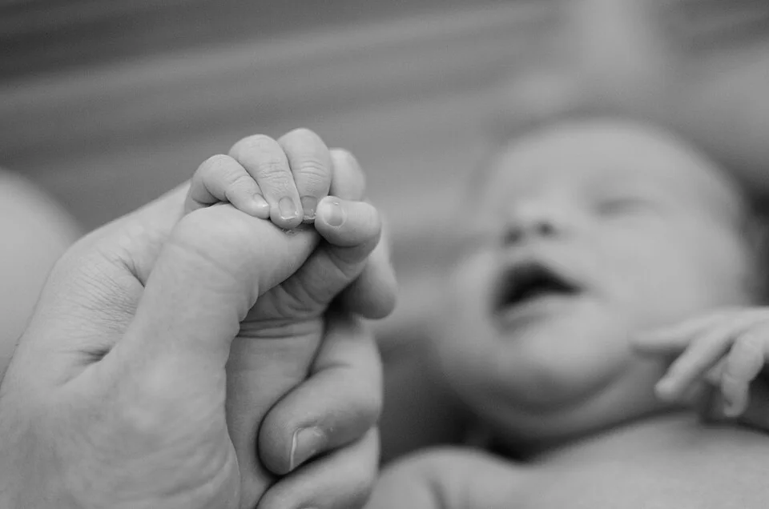

孕期寫真
記下迎接寶寶前的期待，讓畫面貼近孕期狀態與家庭個性。
Mon bébé · 我的寶貝
「沐比」源於法文 mon bébé。從孕期、新生兒到週歲與全家福，用一條清楚而安心的路徑，陪伴家庭留下成長。
品牌理念與服務方向依官方 Facebook 公開資訊整理，實際方案與檔期以品牌確認為準。

Growing together
讓家庭先依生命階段找到適合的拍攝方向，再了解成品、準備與諮詢方式，不必在大量社群貼文中尋找答案。
記下迎接寶寶前的期待，讓畫面貼近孕期狀態與家庭個性。
以寶寶安全與節奏為優先，保留最初幾週細小而珍貴的模樣。
從抬頭、翻身到坐與走，讓每一次變化都有一頁可以回看。
把生日儀式、個性與家人互動，整理成屬於一歲的故事。
讓鏡頭回到家人之間，不只看鏡頭，也保留自然相處的畫面。
把孕期到成長里程碑放進同一條時間線，累積完整的家庭記憶。
Safety feels like care
品牌公開資訊提到攝影團隊配置具保母執照成員。網站可以進一步整理安全照護、環境、準備方式與常見問題，讓父母在詢問檔期前先建立信任。
「懂得照顧寶寶，也懂得保存家人的心情。」
A calm experience
正式版本可依家庭階段提供不同問題，再將資料導向品牌指定的聯絡與預約流程。
孕期、新生兒、週歲或全家福。
先閱讀安全照護與拍攝前說明。
留下月齡、日期與希望記錄的內容。
由團隊回覆適合方案與拍攝時段。
Begin with this moment
這個表單只示範如何依生命階段整理第一輪需求；目前不會送出或保存內容。